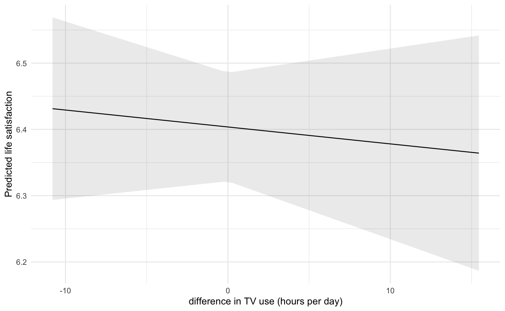
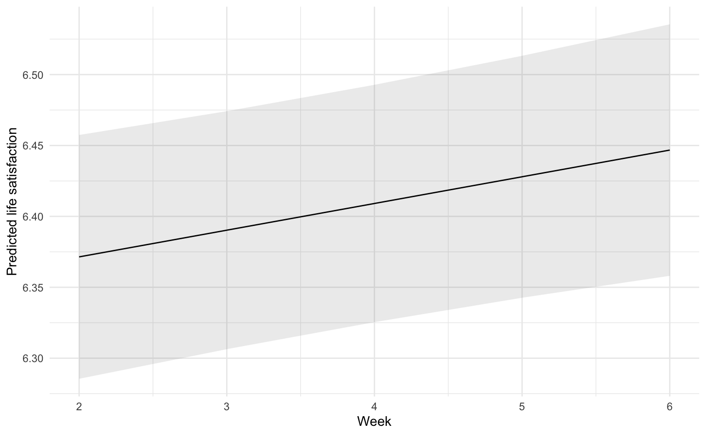

library(plm)
library(lme4)
library(marginaleffects)
library(tidyverse)
library(report)
theme_set(theme_minimal())5 Multilevel-Längsschnittanalyse
Quelle
Johannes, N., Dienlin, T., Bakhshi, H., & Przybylski, A. K. (2022). No effect of different types of media on well-being. Scientific Reports, 12(1). https://doi.org/10.1038/s41598-021-03218-7
5.1 Pakete und Daten
Wir laden zunächst die notwendigen R-Pakete. Für die Fixed-Effect-Modelle verwenden wir plm, für die Multilevel-Analysen das lme4-Paket, für die Modellvorhersagen marginaleffects. Wie immer laden wir tidyverse und report und setzen ein schöneres Theme.
Als Datensatz verwenden wir eine Studie von Johannes et al., bei der dieselben Befragten 6 Wochen lang unterschiedliche Mediennutzung und Lebenszufriedenheit berichtet haben. Der Datensatz ist im sog. Langformat, d.h. die Daten aller Wellen werden aufeinander gestapelt, dementsprechend gibt es n = Personen x Wellen Datenzeilen. Die Personen sind mit der Variable id gekennzeichnet, die Erhebungswoche mit wave. Die weiteren Variablen geben dann jeweils die Messung einer Person in einer Woche wieder, stabile Personenmerkmale wie Alter wiederholen sich entsprechend pro Person.
d_johannes <- read_rds("data/johannes_etal.rds") |>
filter(wave >= 2) |>
filter(!is.na(tv_time))
d_johannes# A tibble: 8,882 × 122
id gender wave age filter_music filter_films filter_tv
<fct> <fct> <dbl> <dbl> <dbl> <dbl> <dbl>
1 pp_2 Female 2 22 1 0 0
2 pp_2 Female 3 22 1 0 0
3 pp_2 Female 5 22 1 0 0
4 pp_3 Male 2 43 1 1 0
5 pp_3 Male 3 43 1 1 0
# ℹ 8,877 more rows
# ℹ 115 more variables: filter_video_games <dbl>, filter_ebooks <dbl>,
# filter_magazines <dbl>, filter_audiobooks <dbl>, music_estimate <dbl>,
# music_identity_1 <dbl>, music_identity_2 <dbl>, music_identity_3 <dbl>,
# music_identity_4 <dbl>, music_identity_5 <dbl>, music_identity_6 <dbl>,
# music_identity_7 <dbl>, music_time <dbl>, music_identity <dbl>,
# films_estimate <dbl>, films_identity_1 <dbl>, films_identity_2 <dbl>, …Da der Datensatz im sog. Langformat ist, gibt es mehrere Zeilen pro Person (eine pro Welle). Wir zählen mit n_distinct() die tatsächliche Personenstichprobe:
n_distinct(d_johannes$id)[1] 2159Zudem schauen wir uns die Deskriptivstatistiken der relevanten Variablen an.
d_johannes |>
select(wave, life_satisfaction, tv_time, gender) |>
report::report_table()Variable | Level | n_Obs | percentage_Obs | Mean | SD | Median | MAD | Min | Max | Skewness | Kurtosis | percentage_Missing
-------------------------------------------------------------------------------------------------------------------------------------------
wave | | 8882 | | 3.71 | 1.32 | 4.00 | 1.48 | 2.00 | 6.00 | 0.21 | -1.12 | 0.00
life_satisfaction | | 8882 | | 6.40 | 2.09 | 7.00 | 1.48 | 0.00 | 10.00 | -0.85 | 0.48 | 0.00
tv_time | | 8882 | | 3.37 | 3.30 | 3.00 | 2.97 | 0.00 | 22.00 | 1.90 | 5.30 | 0.00
gender | Other | 5 | 0.06 | | | | | | | | |
gender | Male | 4283 | 48.22 | | | | | | | | |
gender | Female | 4594 | 51.72 | | | | | | | | | Wir können an der Deskriptivstatistik erkennen, dass Daten über 5 Wochen (Wave 2-6, Woche 1 ist laut Autoren problematisch und wird daher ausgeschlossen) vorliegen und die Befragten im Mittel etwas über 3,5h TV am Tag sehen (SD 3,3h).
5.2 OLS Modelle
5.2.1 Naives Model (pooling)
Im folgenden Beispiel wollen wir den Zusammenhang zwischen der TV-Nutzung und allgemeiner Lebenszufriedenheit untersuchen. Das naive Regressionsmodell ignoriert die Schachtelung bzw. Nicht-Unabhängigkeit der Daten und tut so, als hätten wir n = 8882 unabhängige Fälle.
results_ols <- lm(life_satisfaction ~ tv_time, data = d_johannes)
report::report_table(results_ols)Parameter | Coefficient | 95% CI | t(8880) | p | Std. Coef. | Std. Coef. 95% CI | Fit
---------------------------------------------------------------------------------------------------------
(Intercept) | 6.47 | [ 6.41, 6.53] | 204.44 | < .001 | -1.66e-15 | [-0.02, 0.02] |
tv time | -0.02 | [-0.03, -0.01] | -3.00 | 0.003 | -0.03 | [-0.05, -0.01] |
| | | | | | |
AIC | | | | | | | 38281.92
AICc | | | | | | | 38281.92
BIC | | | | | | | 38303.19
R2 | | | | | | | 1.02e-03
R2 (adj.) | | | | | | | 9.03e-04
Sigma | | | | | | | 2.09Der Effekt der TV-Nutzung ist negativ und statistisch signifikant, aber wir wissen das dieser Schätzer und der Standardfehler verzerrt sind.
5.2.2 Fixed Effects Modell
Ein (vor allem in Politik- und Wirtschaftswissenschaften) weit verbreiteter Ansatz für die Analyse von Paneldaten ist das Fixed Effects (FE) Modell, durch das alle (beobachteten wie unbeobachteten) Unterschiede in der Lebenszufriedenheit zwischen den Befragten im Modell herausgerechnet werden. Technisch geht dies über zwei Wege:
- De-meaning, d.h. von allen individuellen Werten der Prädiktoren wird der Personenmittelwert abgezogen, d.h. der neue Prädiktor ist als Abweichung vom Mittelwert zu verstehen. Der Regressionskoeffizient dieser Variable ist der Within-Effekt.
- Die Befragten-ID als nominale (Dummy-)Koviate in das Modell integriert wird (Least Squares Dummy Variable, LSDV-Modell), der dann übrig bleibende Effekt der TV-Nutzung auf die Lebenszufriedenheit ist der Within-Effekt.
Beide Ansätze werden als FE-Modell bezeichnet, die Koeffizienten als Within-Person-Effects.
Für das De-Meaning verwenden wir einfach die Kombination aus group_by() und mutate(). Anschließend schätzen wir das Modell mit dem neuen Prädiktor, aber ohne Konstante (-1 + ...) im Modell. Die Within-Variable ist die Abweichung der (wöchentlichen) TV-Nutzung vom Personenmittelwert. Wenn eine Befragte im Mittel über alle Wochen 4h TV pro Tag nutzt, aber in Woche 3 nur 2h, dann bekäme sie in diesem Fall den Wert -2. Dies führt dazu, dass wir den Koeffizienten dieser Within-Variable dahingehend interpretieren können, dass die Lebenszufriedenheit derselben Person um B Einheiten sinkt/steigt, wenn sie in einer Woche eine Stunde mehr TV gesehen hat als sonst.
d_johannes <- d_johannes |>
group_by(id) |>
mutate(tv_time_within = tv_time - mean(tv_time, na.rm = TRUE))
results_fe_demean <- lm(life_satisfaction ~ -1 + tv_time_within, d_johannes)
report::report_table(results_fe_demean)Parameter | Coefficient | 95% CI | t(8881) | p | Std. Coef. | Std. Coef. 95% CI | Fit
-----------------------------------------------------------------------------------------------------------
tv time within | -2.56e-03 | [-0.09, 0.09] | -0.06 | 0.956 | -1.89e-03 | [-0.02, 0.02] |
| | | | | | |
AIC | | | | | | | 59093.01
AICc | | | | | | | 59093.01
BIC | | | | | | | 59107.19
R2 | | | | | | | 3.43e-07
R2 (adj.) | | | | | | | -1.12e-04
Sigma | | | | | | | 6.74Der Koeffizient gibt den Within-Person-Effekt wieder, er ist nicht signifikant. Allerdings stimmen beim manuellen De-Meaning und anschließenden Schätzen ohne Intercept die Freiheitsgrade nicht, und damit auch die p-Werte und CI. Daher empfiehlt es sich, für FE-Modell spezielle R-Pakete zu verwenden, z.B. plm.
results_fe <- plm::plm(life_satisfaction ~ tv_time, index = "id", data = d_johannes, model = "within")
summary(results_fe)Oneway (individual) effect Within Model
Call:
plm::plm(formula = life_satisfaction ~ tv_time, data = d_johannes,
model = "within", index = "id")
Unbalanced Panel: n = 2159, T = 2-5, N = 8882
Residuals:
Min. 1st Qu. Median 3rd Qu. Max.
-5.5005 -0.2997 0.0000 0.3000 4.5020
Coefficients:
Estimate Std. Error t-value Pr(>|t|)
tv_time -0.0025554 0.0051773 -0.4936 0.6216
Total Sum of Squares: 3816.2
Residual Sum of Squares: 3816.1
R-Squared: 3.6242e-05
Adj. R-Squared: -0.32114
F-statistic: 0.243626 on 1 and 6722 DF, p-value: 0.62162
LSDV- vs. FE-Modell
Da das LSDV-Modell mit lm() und vielen Befragten sehr lange zu schätzen braucht, illustrieren wir diesen Ansatz hier mit einem kleinen Datensatz von 10 Befragten:
d_johannes10 <- d_johannes |>
filter(id %in% sample(d_johannes$id, size = 10))
lm(life_satisfaction ~ -1 + tv_time + id, data = d_johannes10) |>
report::report_table() |>
head(3)Parameter | Coefficient | 95% CI | t(36) | p | Std. Coef. | Std. Coef. 95% CI | Fit
--------------------------------------------------------------------------------------------------
tv time | -0.01 | [-0.24, 0.22] | -0.11 | 0.909 | -0.02 | [-0.32, 0.29] |
id [pp_1412] | 7.06 | [ 5.83, 8.28] | 11.68 | < .001 | -0.16 | [-0.74, 0.42] |
id [pp_2043] | 5.90 | [ 5.04, 6.76] | 13.93 | < .001 | -1.02 | [-1.59, -0.46] | Die Personen-Fixed-Effects interessieren uns substanziell nicht, sondern nur der TV-Nutzungseffekt, der den vorausgesagten Zuwachs/Verlust an Lebenszufriedenheit bei ein und derselben Person widergibt, wenn diese eine Stunde mehr fernsehen würde.
Hier das klassische FE-Modell mit plm().
plm::plm(life_satisfaction ~ tv_time, data = d_johannes10, model = "within", index = "id") |>
summary()Oneway (individual) effect Within Model
Call:
plm::plm(formula = life_satisfaction ~ tv_time, data = d_johannes10,
model = "within", index = "id")
Unbalanced Panel: n = 11, T = 2-5, N = 48
Residuals:
Min. 1st Qu. Median 3rd Qu. Max.
-1.9000000 -0.2882804 0.0013022 0.2812500 1.6000000
Coefficients:
Estimate Std. Error t-value Pr(>|t|)
tv_time -0.013022 0.113382 -0.1148 0.9092
Total Sum of Squares: 18.888
Residual Sum of Squares: 18.881
R-Squared: 0.00036627
Adj. R-Squared: -0.30508
F-statistic: 0.0131904 on 1 and 36 DF, p-value: 0.9092Die “Vergleichsgruppe” sind im Gegensatz zum naiven Modell also nicht (nur) die anderen Personen, sondern ausschließlich die anderen Messungen derselben Person. Dies wird als kausaler Effekt der TV-Nutzung auf die Lebenszufriedenheit interpretiert. Im vorliegenden Beispiel ist der Effekt praktisch null (wobei wir nur eine kleine Substichprobe untersucht haben).
Der zentrale Nachteil des FE-Modells ist die Tatsache, dass wir keine nicht-variierenden Personenmerkmale als Prädiktor ins Modell aufnehmen können, z.B. Geschlecht:
results_fe_gender <- plm::plm(life_satisfaction ~ tv_time + gender, data = d_johannes, model = "within", index = "id")
summary(results_fe_gender)Oneway (individual) effect Within Model
Call:
plm::plm(formula = life_satisfaction ~ tv_time + gender, data = d_johannes,
model = "within", index = "id")
Unbalanced Panel: n = 2159, T = 2-5, N = 8882
Residuals:
Min. 1st Qu. Median 3rd Qu. Max.
-5.5005 -0.2997 0.0000 0.3000 4.5020
Coefficients:
Estimate Std. Error t-value Pr(>|t|)
tv_time -0.0025554 0.0051773 -0.4936 0.6216
Total Sum of Squares: 3816.2
Residual Sum of Squares: 3816.1
R-Squared: 3.6242e-05
Adj. R-Squared: -0.32114
F-statistic: 0.243626 on 1 and 6722 DF, p-value: 0.62162Weil alle beobachteten (und nicht beobachteten) Unterschiede zwischen den Befragten beim LSDV-Modell schon durch die id-Kovariate abgebildet werden bzw. beim FE-Modell die Unterschiede zwischen Personen verschwinden, sind alle Personenvariablen wie Alter oder Geschlecht perfekt multikollinear, und wir erhalten daher keine Schätzung für ihren Einfluss. Wenn wir gleichsam die Nicht-Unabhängigkeit der Daten und Personen-Kovariaten berücksichtigen wollen, brauchen wir ein alternatives Modell, das Random Effects Modell.
5.3 Multilevel-Modelle
5.3.1 Random Effects Modell
Im Random Effects Modell werden nicht mehr alle Befragten als fixe Variablen ins Modell genommen, sondern es wird ein Multilevel-Modell geschätzt, bei dem Messungen auf Level 1 sind und Befragte auf Level 2. Die Annahme dabei ist, dass die Unterschiede in der mittleren Lebenszufriedenheit der Befragten einer Normalverteilung folgen, d.h. manche Befragten sind im Mittel (un-)zufriedener als andere. Diese Modell wird als Random Intercept Modell bezeichnet, wobei random hier nicht bedeutet, dass die Intercepts pro Person rein zufällig streuen, sondern sie einer Zufallsvariable (Normalverteilung) entsprechen, daher bezeichnen wir es auch lieber als Varying Intercept Modell
In R kann man Multilevel-Modelle mit dem lme4-Paket schätzen. Die Random (oder besser: nach Personen variierenden) Intercepts werden mit (1 | id) spezifiziert.
results_re <- lme4::lmer(life_satisfaction ~ tv_time + (1 | id), data = d_johannes)
report::report_table(results_re)Parameter | Coefficient | 95% CI | t(8878) | p | Effects | Group | Std. Coef. | Std. Coef. 95% CI | Fit
----------------------------------------------------------------------------------------------------------------------------------
(Intercept) | 6.42 | [ 6.33, 6.51] | 140.43 | < .001 | fixed | | -8.95e-04 | [-0.04, 0.04] |
tv time | -5.74e-03 | [-0.02, 0.00] | -1.18 | 0.239 | fixed | | -9.06e-03 | [-0.02, 0.01] |
| 1.94 | | | | random | id | | |
| 0.75 | | | | random | Residual | | |
| | | | | | | | |
AIC | | | | | | | | | 27350.19
AICc | | | | | | | | | 27350.19
BIC | | | | | | | | | 27378.55
R2 (conditional) | | | | | | | | | 0.87
R2 (marginal) | | | | | | | | | 8.25e-05
Sigma | | | | | | | | | 0.75Die Ergebnisse des RE-Modells zeigen einen winzigen, nicht-signifikanten Effekt der TV-Nutzung auf die Lebenszufriedenheit, was den Ergebnissen des naiven OLS-Modells oben widerspricht.
Im Gegensatz zum FE-Modell ist es problemlos möglich, beliebige variierende oder stabile (Personen-)Variablen als Prädiktoren in das Modell aufzunehmen, z.B. wieder Geschlecht:
results_re_gender <- lme4::lmer(life_satisfaction ~ tv_time + gender + (1 | id), data = d_johannes)
report::report_table(results_re_gender)Parameter | Coefficient | 95% CI | t(8876) | p | Effects | Group | Std. Coef. | Std. Coef. 95% CI | Fit
----------------------------------------------------------------------------------------------------------------------------------
(Intercept) | 6.46 | [ 6.33, 6.58] | 101.45 | < .001 | fixed | | 0.02 | [-0.04, 0.07] |
tv time | -5.71e-03 | [-0.02, 0.00] | -1.17 | 0.241 | fixed | | -9.02e-03 | [-0.02, 0.01] |
gender [Female] | -0.07 | [-0.24, 0.10] | -0.84 | 0.402 | fixed | | -0.03 | [-0.11, 0.05] |
gender [Other] | -0.75 | [-4.62, 3.12] | -0.38 | 0.705 | fixed | | -0.36 | [-2.21, 1.49] |
| 1.94 | | | | random | id | | |
| 0.75 | | | | random | Residual | | |
| | | | | | | | |
AIC | | | | | | | | | 27353.24
AICc | | | | | | | | | 27353.25
BIC | | | | | | | | | 27395.79
R2 (conditional) | | | | | | | | | 0.87
R2 (marginal) | | | | | | | | | 4.47e-04
Sigma | | | | | | | | | 0.75Wir erkennen, dass es keine signifikanten Geschlechtsunterschiede in der Lebenszufriedenheit gibt, obwohl zumindest in der Stichprobe Frauen und vor allem andere Geschlechter etwas weniger zufrieden sind.
5.3.2 REWB Modell
Obwohl das RE-Modell deutlich flexibler in der Anwendung ist, wird es in der Praxis oft kritisiert, weil beim RE-Modell nicht gewährleistet ist, dass der Effekt des Prädiktors als kausaler Effekt unter Kontrolle aller beobachteten und unbeobachteten Unterschiede zwischen den Befragten zu interpretieren ist. Dies kann man aber durch eine spezielle Spezifikation des Modells als Random Effects Within-Beween Modell beheben, dass die Vorteile des FE-Modells (unverzerrter Schätzer des kausalen Within-Person Effekts) mit denen des RE-Modells (flexible Integration weiterer Kovariaten) verbindet.
Praktisch wird jede Prädiktorvariable in einen Within-Person und einen Between-Person-Bestandteil zerlegt. Die Between-Variable ist nichts anderes als der Personenmittelwert der TV-Nutzung einer Person über alle Wellen, also die mittlere TV-Nutzung pro Person. Die Vergleichsgruppe sind also wie im FE-Modell nicht die anderen Personen, sondern die jeweils anderen Messungen derselben Person. Daher braucht sowohl das FE als auch das REWB-Modell min. 3 Messungen pro Person, um überhaupt Personen-Mittelwert und Abweichungen vom Mittelwert berechnen zu können. Wir nutzen wieder group_by() + mutate(), um zusätzlich zum Within-Prädiktor auch den Between-Prädiktor, also den Personenmittelwert ins Modell zu integrieren:
d_johannes <- d_johannes |>
group_by(id) |>
mutate(
tv_time_between = mean(tv_time, na.rm = TRUE)
)Anschließend schätzen wir das REWB-Modell, bei dem für TV-Nutzung nun zwei Prädiktorvariablen im Modell sind - einmal within einmal between.
results_rewb <- lme4::lmer(life_satisfaction ~ tv_time_within + tv_time_between + (1 | id), data = d_johannes)
report::report_table(results_rewb)Parameter | Coefficient | 95% CI | t(8877) | p | Effects | Group | Std. Coef. | Std. Coef. 95% CI | Fit
-----------------------------------------------------------------------------------------------------------------------------------
(Intercept) | 6.50 | [ 6.38, 6.63] | 100.40 | < .001 | fixed | | -4.82e-04 | [-0.04, 0.04] |
tv time within | -2.56e-03 | [-0.01, 0.01] | -0.49 | 0.622 | fixed | | -1.89e-03 | [-0.01, 0.01] |
tv time between | -0.03 | [-0.06, 0.00] | -2.11 | 0.035 | fixed | | -0.04 | [-0.08, 0.00] |
| 1.94 | | | | random | id | | |
| 0.75 | | | | random | Residual | | |
| | | | | | | | |
AIC | | | | | | | | | 27355.43
AICc | | | | | | | | | 27355.44
BIC | | | | | | | | | 27390.89
R2 (conditional) | | | | | | | | | 0.87
R2 (marginal) | | | | | | | | | 1.79e-03
Sigma | | | | | | | | | 0.75Wie können wir nun die beiden Koeffizienten interpretieren: Der (minimale und nicht-signifikante) Within-Effekt entspricht exakt dem FE-Modell und zeigt, dass intra-individuelle Schwankungen in der wöchentlichen TV-Nutzung nicht mit Schwankungen in der Lebenszufriedenheit einhergehen. TV-Nutzung macht die Befragten offenbar weder zufriedener noch unzufriedener. Wir sehen aber am negativen Between-Effekt, dass es Unterschiede in der mittleren Lebenszufriedenheit zwischen intensiven und sporadischen TV-Nutzerinnen gibt: Personen, die im Mittel mehr fernsehen, sind im Mittel etwas unzufriedener, oder anders formuliert: Personen, die im Mittel zufriedener sind, schauen im Mittel etwas weniger fern. Diesen Between-Effekt kann man aber nicht kausal interpretieren, sondern nur als Korrelation.
Wir visualisieren hier noch einmal den Within-Effekt und sehen, dass selbst 10h mehr oder weniger tägliche TV-Nutzung als sonst die Lebenszufriedenheit nur minimal beeinflusst.
preds_rewb <- marginaleffects::avg_predictions(results_rewb, variables = "tv_time_within")
preds_rewb |>
ggplot(aes(x = tv_time_within, y = estimate, ymin = conf.low, ymax = conf.high)) +
geom_line() +
geom_ribbon(alpha = .1) +
labs(x = "difference in TV use (hours per day)", y = "Predicted life satisfaction")
Wie zuvor können wir weitere Kovariaten ins Modell aufnehmen, sowohl auf Ebene der wöchentlichen Messung als auch auf Personenebene.
results_rewb_gender <- lme4::lmer(life_satisfaction ~ tv_time_within + tv_time_between + gender + (1 | id), data = d_johannes)
report::report_table(results_rewb_gender)Parameter | Coefficient | 95% CI | t(8875) | p | Effects | Group | Std. Coef. | Std. Coef. 95% CI | Fit
-----------------------------------------------------------------------------------------------------------------------------------
(Intercept) | 6.54 | [ 6.39, 6.69] | 83.91 | < .001 | fixed | | 0.02 | [-0.04, 0.07] |
tv time within | -2.56e-03 | [-0.01, 0.01] | -0.49 | 0.622 | fixed | | -1.89e-03 | [-0.01, 0.01] |
tv time between | -0.03 | [-0.06, 0.00] | -2.09 | 0.037 | fixed | | -0.04 | [-0.08, 0.00] |
gender [Female] | -0.07 | [-0.24, 0.10] | -0.80 | 0.424 | fixed | | -0.03 | [-0.11, 0.05] |
gender [Other] | -0.78 | [-4.65, 3.08] | -0.40 | 0.692 | fixed | | -0.37 | [-2.23, 1.48] |
| 1.94 | | | | random | id | | |
| 0.75 | | | | random | Residual | | |
| | | | | | | | |
AIC | | | | | | | | | 27358.54
AICc | | | | | | | | | 27358.55
BIC | | | | | | | | | 27408.18
R2 (conditional) | | | | | | | | | 0.87
R2 (marginal) | | | | | | | | | 2.12e-03
Sigma | | | | | | | | | 0.755.3.3 Wachstumsmodell
Neben den klassischen FE- und RE-Modellen sind sogenannte Wachstumsmodelle in den Sozialwissenschaften weit verbreitet, vor allem im Bereich der Entwicklungspsychologie oder Jugendmedienforschung. Hier geht es zunächst gar nicht darum, den (kausalen) Effekt einer Variable auf eine andere zu schätzen, sondern zunächst zu prüfen, ob ein Outcome sich über die Zeit (linear) verändert. In unserem Beispiel könnten wir fragen, ob sich die Lebenszufriedenheit im Laufe der fünfwöchigen Studienphase verändert hat. Hierfür verwenden wir die Zeitvariable wave einfach als numerischen Prädiktor, lassen aber weiterhin personenspezifische Mittel- bzw. Ausgangswerte (Random Intercepts) zu:
results_time1 <- lme4::lmer(life_satisfaction ~ wave + (1 | id), data = d_johannes)
report::report_table(results_time1)Parameter | Coefficient | 95% CI | t(8878) | p | Effects | Group | Std. Coef. | Std. Coef. 95% CI | Fit
---------------------------------------------------------------------------------------------------------------------------------
(Intercept) | 6.33 | [6.24, 6.43] | 130.67 | < .001 | fixed | | -1.69e-04 | [-0.04, 0.04] |
wave | 0.02 | [0.01, 0.03] | 2.96 | 0.003 | fixed | | 0.01 | [ 0.00, 0.02] |
| 1.94 | | | | random | id | | |
| 0.75 | | | | random | Residual | | |
| | | | | | | | |
AIC | | | | | | | | | 27342.31
AICc | | | | | | | | | 27342.31
BIC | | | | | | | | | 27370.68
R2 (conditional) | | | | | | | | | 0.87
R2 (marginal) | | | | | | | | | 1.42e-04
Sigma | | | | | | | | | 0.75In der Tat sehen wir einen winzigen, positiven, statistisch signifikanten Regressionskoeffizienten für Wave: Jede Woche nahm die mittlere Lebenszufriedenheit der Befragten um 0,02 (!) Skalenpunkte zu. Der Intercept gibt den geschätzten Ausgangswert zu Woche 0 wider, in dem aber gar keine Messung stattfand. Wir können aber den Intercept durch zentrieren der wave-Variable interpretierbarer machen.
Mithilfe von Modellvorhersagen können wir das geschätzte Wachstum auch visualisieren:
marginaleffects::avg_predictions(results_time1, variables = c("wave")) |>
ggplot(aes(
x = wave, y = estimate, ymin = conf.low, ymax = conf.high,
)) +
geom_line() +
geom_ribbon(alpha = .1) +
labs(x = "Week", y = "Predicted life satisfaction")
Bei Wachstumsmodellen ist die Annahmen zumeist, dass nicht alle Individuen sich gleichartig entwickeln: Manche Befragten werden mit der Zeit vielleicht sehr viel zufriedener, andere unzufriedener, andere sind immer gleich zufrieden. Um dies zu modellieren, können wir den Koeffizienten für das Wachstum auch nach Personen variieren lassen (Random bzw. Varying Slope). Wir gehen also davon aus, dass Befragte unterschiedliche Ausgangswerte und unterschiedliche Entwicklungsverläufe haben können. Dies spezifizieren wir durch den Term (1 + wave | id), d.h. beides darf nach Personen variieren.
results_time2 <- lme4::lmer(life_satisfaction ~ wave + (1 + wave | id), data = d_johannes)Mit Hilfe der anova()-Funktion können wir die Güte der beiden Modelle vergleichen:
anova(results_time1, results_time2)Data: d_johannes
Models:
results_time1: life_satisfaction ~ wave + (1 | id)
results_time2: life_satisfaction ~ wave + (1 + wave | id)
npar AIC BIC logLik deviance Chisq Df Pr(>Chisq)
results_time1 4 27330 27358 -13661 27322
results_time2 6 27226 27268 -13607 27214 107.87 2 < 2.2e-16 ***
---
Signif. codes: 0 '***' 0.001 '**' 0.01 '*' 0.05 '.' 0.1 ' ' 1Wir sehen, dass das Modell mit den variierenden Intercepts und Slopes signifikant besser zu den Daten passt, d.h. es gibt bedeutsame Heterogenität in der Entwicklung der Lebenszufriedenheit. Ändert dies etwas an unserem Punktschätzer für wave?
report::report_table(results_time2)Parameter | Coefficient | 95% CI | t(8876) | p | Effects | Group | Std. Coef. | Std. Coef. 95% CI | Fit
---------------------------------------------------------------------------------------------------------------------------------
(Intercept) | 6.33 | [6.24, 6.43] | 132.29 | < .001 | fixed | | -3.24e-04 | [-0.04, 0.04] |
wave | 0.02 | [0.00, 0.03] | 2.56 | 0.011 | fixed | | 0.01 | [ 0.00, 0.02] |
| 1.93 | | | | random | id | | |
| 0.17 | | | | random | id | | |
| -0.13 | | | | random | id | | |
| 0.71 | | | | random | Residual | | |
| | | | | | | | |
AIC | | | | | | | | | 27238.19
AICc | | | | | | | | | 27238.20
BIC | | | | | | | | | 27280.74
R2 (conditional) | | | | | | | | | 0.88
R2 (marginal) | | | | | | | | | 1.36e-04
Sigma | | | | | | | | | 0.71Nein.
5.4 Glossar
| Funktion | Definition |
|---|---|
| lme4::lmer | Multilevel-Modelle schätzen |
5.5 Hausaufgabe
Untersuchen Sie den (kausalen) Zusammenhang zwischen wöchentlicher Musiknutzung (music_time) und Lebenszufriedenheit mit einem FE oder REWB-Modell.